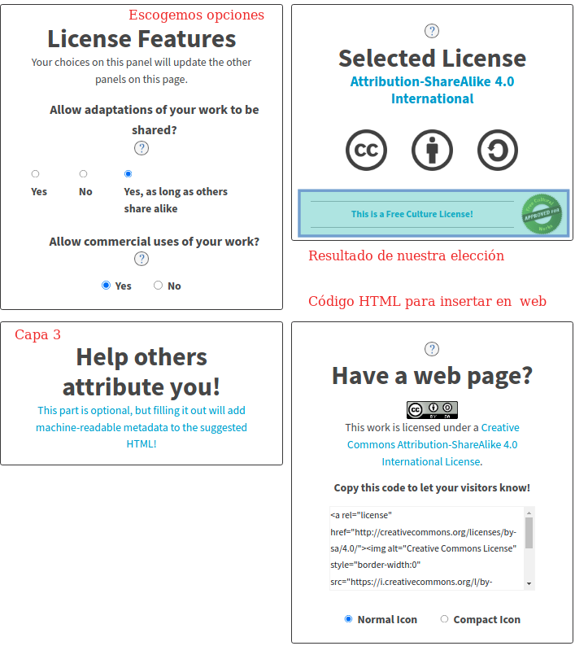

Licencias Creative Commons
¿Que hacen?
Son una forma sencilla y estandarizada de otorgar permisos legales a obras creativas.
Las combinación de las herramientas CC conforman un conjunto de contenido que puede ser copiado, distribuido, editado, remezclado y desarrollado, y todo dentro de los límites de la ley de propiedad intelectual.
Diseño
Aunque en versión beta tenemos un sencillo selector de licencia que nos ayuda a escoger la mas apropiada a nuestras necesidades.
Tres Capas
- Código legal. Es la forma tradicional de licencia en tipo de lenguaje y formato de texto que los abogados conocen y adoran.
- Legible por humanos. Están en un formato que las personas normales puedan leer conocido como "Commons Deed". Es un resumen de los términos más importantes que no forma parte de la licencia y que no es parte del código legal.
- Legible por máquinas. Se trata de un resumen de las libertades y obligaciones claves escritos en un formato que los sistemas informáticos, motores de búsqueda y otras tecnologías puedan entender. La forma estandarizada de escribir las licencias que el software pueda entender se denomina CC Rights Expression Language.
Opción de configuración de licencia
